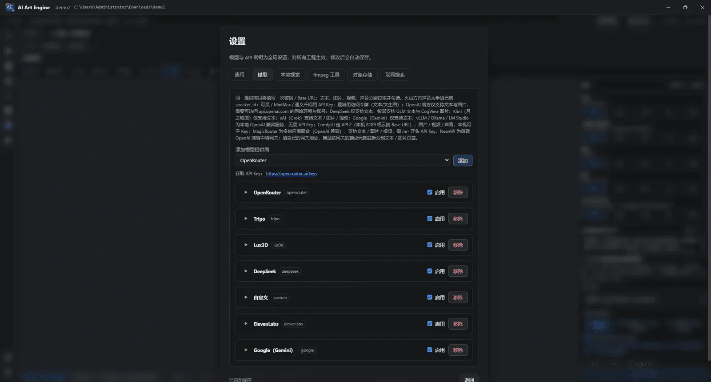

Tutorial · Quickstart · v9.0.0
快速上手
从安装到拿到第一条成片，全程不需要手动搭建任何一个节点。 跟着这一页走完，你就能独立跑通一条完整的 AI 生成链路，并理解后续所有功能的位置。
1. 你需要准备什么
◈ AI 对话 面板，直接点击引导卡片上的 「⚡ 零 Key 极速体验」——无需配置任何云端密钥，即可在本地完整跑通一套仙侠 RPG 装备界面拆解 + 3D 爆炸拆层预览 → 导出原生可编辑 TySh 文本图层 .psd / Unity UGUI / Godot 4 场景的真实生产管线！
- 至少一个模型提供商的密钥（云端生成时）。本软件不绑定特定云厂商，文本、图片、视频、音频与 3D 生成都由你自己的 提供商账号或本地模型完成（OpenRouter、DeepSeek、智谱、火山方舟、可灵、MiniMax、通义千问、ComfyUI、Ollama 等均可）。首次体验云端生图/视频建议先准备一个文本模型 + 一个图片模型，视频模型可后续再加。
- 本机上一个空目录，用于存放工作区（Workspace）。所有素材、节点图与产出都保存在你自己的磁盘上。
- 约 3–5 分钟。首次配置完模型后，生成一条完整工作流或拆解重组一套游戏 UI 只需数分钟。
2. 安装与启动
- 到 下载页 获取对应平台的安装包（Windows / macOS Intel / macOS Apple 芯片 / Linux）。
- 按系统提示完成安装。首次启动若被系统安全策略拦截，在系统设置中允许该应用运行即可。
- 启动后是首页。界面没有传统菜单栏：顶栏 Logo 回首页，右上角齿轮打开设置。
3. 接入模型（最关键的一步）
这一步做对了，后面几乎不会遇到报错。打开右上角设置 → 模型：
- 点击添加提供商，选择你的服务商，粘贴 API 密钥并保存。
- 点击拉取模型列表，在列表中勾选你要用的模型。
- 分别指定默认模型：文本模型（负责分镜规划与提示词改写）、图片模型（负责出图）、 视频模型（负责动态视频）。三者可以来自不同提供商。
- 确认账户余额充足——余额不足会直接导致生成失败，这是新手最常见的问题。

可选：配置对象存储
设置 → 对象存储，启用火山 TOS / 阿里云 OSS / 腾讯云 COS / 兼容 Amazon S3 其中之一（同时只能启用一个）。 只在需要视频外链或参考视频时才必须配置，纯本地出图可以先跳过。兼容 Amazon S3 的填法见 Yandex Object Storage 示例。
4. 新建工作区（多工程管理）
- 回到首页，点击新建工作区（或「打开工作区」加载已有目录）。
- 填写工作区 / 工程名称，点击浏览选择本地存储目录（选一个空文件夹）。
- 点击创建，直接进入画布工作区。
v9.0.0 采用多工程工作区（Workspace）架构：目录内通过 workspace.json 与各子工程的
project.json 组织画布、资产与会话记录。进入工作区后，你可以随时展开右侧
◈ AI 对话 面板的左侧边栏，在同一工作区下新建、切换多个子工程（支持最多 6 路并发会话）或直接用内置文件编辑器查阅项目文件；整个工作区目录可直接拷贝备份或跨机迁移。
5. 三种方式一键启动生成链路
这是本软件最省事的路径：不用手拖零散节点、不用逐根连线。在 v9.0.0 中，你有三种即开即用的启动方式：
-
方式一：内置「一键工作流」预设或自然语言规划——点击工作区顶栏「新建 → 一键工作流」，直接选用内置的
「爆款视频拆解复刻」（
builtin.video-breakdown-remake，双节点四轴取证 + 1:1 复刻对比成片），或在工作流描述里用自然语言写下目标（例如 「一句产品卖点 → 3 张分镜图 → 15 秒竖屏视频」）让 AI 自动规划节点拓扑，预览确认后保存为宿主资产。 -
方式二：从「技能市场」安装领域工作流包——点击顶栏右上角「技能市场」（设置图标左侧），按领域一键安装官方与社区工作流/技能包（如
AI 漫剧/短剧全流程
short-drama、游戏 UI 图集重组、电商带货海报与视频 等）。安装后既可在「一键工作流」中选用，也可在◈ AI 对话中让 Agent 按工作流 ID 精确挂载执行。 -
方式三：直接拖拽
aiae:graph配方 PNG 入画布（PNG 即工作流）——任何由 AI Art Engine 导出的配方卡片 PNG（例如官网提供的assets/recipe/recipe1.png或社区分享的配方图）都无损内嵌了完整aiae:graph拓扑元数据；把它直接从文件管理器或浏览器拖进画布，整条可运行节点链路瞬间原地展开！

6. 跑起来，拿到成片
- 把刚创建的宿主资产从资产库拖到画布上。
- 给输入口灌入内容：在剧本节点里粘贴一段故事，或用「文本」节点写一句话设定。
- 选中宿主节点或其输出口，点击加入任务（或右键「运行」），整条链路会依次执行。
-
在右侧 Inspector 中查看每一步的产出；图库节点可切换历史记录，选中的那条即为
out输出。 - 拿到视频或图片后，打开成片时间线拖入素材编排轨道，即可预览并导出成片。

做漫剧 / 短剧的话走这条更快的路
如果你使用短剧 / AI 漫剧全流程（short-drama）工作流，只需双击影视工作台（film.workbench）进入全屏 Dive 界面，选定 21 种题材母体（P01–P21）之一，即可在五阶段闭环页签（① A+B 双节拍分镜拆解 → ② 11 项导演连贯性与 ≥67% 对白审核 → ③ 角色 #variant 换装/场景/道具/STYLE01 与跨集 TTS 音色设定 → ④ @1–@4 锁定批量拍摄与视觉质检重拍 → ⑤ 封面标题宣发包与整集 .mp4 导出）中一站式出片。
详见 短剧制作教程。
7. 下一步去哪
到这里你已经跑通了一条完整链路。按你的目标选择下一步：
8. 卡住了？先看这里
一执行就失败，或提示余额不足
九成是提供商账户问题：检查余额是否充足、密钥是否正确、模型是否已勾选启用。 换一个模型跑同一节点，可以快速区分是账户问题还是软件问题。
连线连不上，提示类型不匹配
端口严格区分单数与复数：image 进不了
images。需要列表输入时，请从上游的方形口（out-all）连线，
圆形 out 连不上。
角色「变脸」，分镜之间不一致
靠参考图而不是反复描述来解决：使用锚点图锁定长相与服装，或把角色登记为世界元素 供各场共用。详见 核心概念。
怎么让 Claude Code 等 AI 助手直接操作应用？（安装 MCP）
应用自带本地双向 MCP 工具服务（共 102 个工具：/mcp 93 个主工具 + /mcp/blender 9 个 Blender 实时建模桥工具），接入后外部 Agent 就能在对话里安装技能、编排 DAG 节点图、运行数值仿真与批量生成。启动应用后打开
设置 → MCP，复制「Claude Code 接入命令」到终端执行（或按 stdio 桥方式配置），
重启 Agent 会话即可生效。详见 MCP 接入教程。
更多问题
完整清单见手册的 故障排查 章节（按出现频率排序）。 仍无法解决，可到 QQ 群 647306826 或 GitHub Issues 反馈。